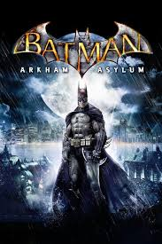

História
Em Batman: Arkham Asylum, Batman leva o Coringa para o Asilo Arkham, mas o vilão já tinha planejado tudo e toma o controle do lugar, libertando vários criminosos perigosos. Preso dentro do asilo, Batman enfrenta inimigos como Harley Quinn, Bane, Espantalho e Hera Venenosa enquanto tenta impedir o caos. O Coringa usa uma substância chamada Titan, que transforma pessoas em monstros superfortes, para tentar dominar Gotham. No final, ele usa a fórmula em si mesmo, mas Batman consegue derrotá-lo e salvar a cidade.
combate
O combate de Batman: Arkham Asylum é focado em lutas rápidas e fluidas. Batman pode atacar vários inimigos ao mesmo tempo usando socos, chutes, contra-ataques e golpes especiais. O sistema recompensa o jogador por manter combos sem ser atingido. Além das lutas corpo a corpo, Batman usa gadgets como o Batarangue, gel explosivo e gancho para derrotar inimigos e explorar o asilo. Também existem partes furtivas, onde o jogador precisa agir escondido para eliminar os criminosos silenciosamente.
colecionáveis
Os colecionáveis de Batman: Arkham Asylum são principalmente os desafios do Charada. Pelo asilo existem troféus escondidos, enigmas, fitas de entrevista e símbolos secretos espalhados pelos cenários. Ao encontrar esses itens, o jogador desbloqueia informações sobre personagens, histórias do universo Batman e conteúdos extras do jogo. Muitos colecionáveis exigem usar gadgets específicos e explorar áreas escondidas do Arkham.
Viloes
Os vilões de **Batman: Arkham Asylum** incluem Coringa, Harley Quinn, Bane, Espantalho, Hera Venenosa, Killer Croc, Charada e Zsasz. Cada um atrapalha Batman de formas diferentes durante a história do jogo.